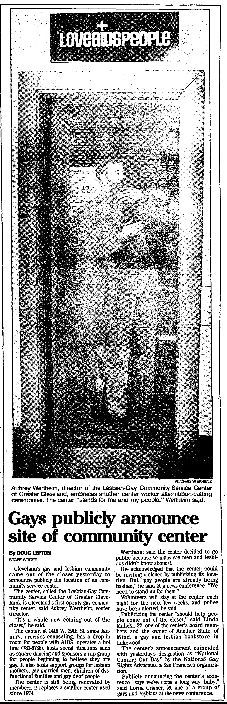
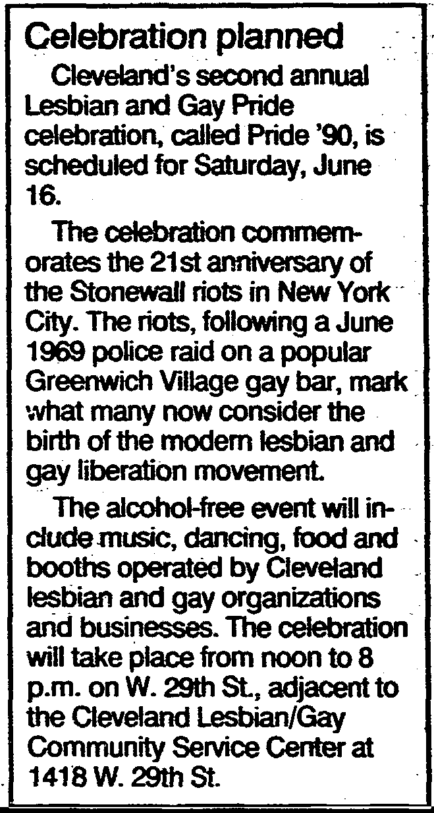

Striebinger Block
Historic Building on W. 29 + Detroit.
Former home to the LGBT Community Center and multiple
queer-centered events, organizations, and businesses.
Oral History by Brandon Sitler Zelmer
1990 Cleveland Pride Footage
Oral History by Linda Malicki
Linda Malicki served as the Executive Director of the Lesbian/Gay Community Service Center (now called the LGBT Community Center of Greater Cleveland) between 1996-2002.
-

Cleveland Plain Dealer. October 12, 1988.
LINDA: I first learned about the Center when I opened a gay and lesbian bookstore called Another State of Mind in Lakewood in 1987. Before that, I had been peripherally involved with the gay community in Cleveland. The bookstore also had a place for people to come and sit. We had a store cat and we had coffee brewing all the time. If somebody wanted to come in and browse and look around, and then wanted to sit and talk, that option was available. And so it almost became like a mini-hotline for people, who could come in and just have other lesbians to talk to or gay men to talk to.
And then we started getting phone calls. I found out that the Lesbian/Gay Community Center had a hotline at the time, and most of the men weren’t comfortable talking to the lesbians. So they would send the lesbians to me at the bookstore. And I couldn’t understand why I was getting all these calls, saying things like, “Can I just talk to you?” or “Here’s what going on.” I went over and spoke with Aubrey Wertheim, who was the senior staff person at the time. We talked about trying to do some training for the guys on the hotline, and I just finally said, “Ok, this is fine, have women call me if they need to talk. This is just something I care about, I’ll continue to do that, if that’s how it’s gonna work.”
With more dialogue, Aubrey invited me to be on the board of the Center, so I joined the board in 1987. And at that time, Aubrey was the director there and I think they may have had a couple other part-time staffers. So my partner and I moved to Nashville in ’89 because she got a job there. And then in ’93 we came back, and I called the current executive director of the center, Judy Rainbrook, who had been the board chair when I was on the board. And I said, “Hey, I’m back in town looking for a job in office management,” or whatever, and she said, “When can you start?” and so I came in as an administrative assistant in late-’93.
-
Service and Outreach
LINDA: At that time, we had a youth program called PRYSM (Presence and Respect for Youth in Sexual Minority) that met every Saturday. It was an all-volunteer-run program, and the volunteers were incredibly dedicated to these kids. They were dedicated to being there for them, and to trying to help them through this struggle, because this was still a very dangerous time to be gay. And certainly, most people were not out. We had the youth program, we still had the hotline, and we had a part-time staff person who womanned that program. We started The Living Room sometime between 1993-1995. The Living Room was a drop-in space for men with HIV, or men just needing a place to talk about how to maneuver safely in this new world. We were able to rent the storefront next to the main center was (the main center had two storefronts), so we added the third, and that was The Livingroom. And that was started by Aubrey and Jimmy Amato, who was HIV+. And it became this incredible resource and support system for men living with HIV and AIDS.
In addition to that, we did outreach. We did safe sex outreach in the bars, in the parks, anywhere we could go to get to guys. We’d give out safe sex information, explain how to get tested, hand out condoms, and did anything we could do to try to educate the community. We also worked with a lot of groups in the city; there were leather groups, there was a country western dance group, there was the G.I.F.T. Cruise, which was a yearly fundraiser cruise on the river, Black and White Men Together, we just worked with any group that would work with us to spread the word about safe sex. And also to spread the word that we were a resource for them via the hotline. We also had men’s support groups—I think it was just men at that point. There may have been a mixed group for men and women. At that point in time, the lesbian community was centered on the east side around Cleveland Heights. So a lot of the support groups for Lesbians were held there.
-
Space to Grow
LINDA: In 1996, Judy Rainbrook resigned, and I was appointed the executive director. At that point, we had a full-time staff person for The Livingroom, full-time staff person for the youth group, and then I added a marketing and PR person so that we could begin to get the word out to both donors and constituents, anyone who needed us. We had a really robust fundraising program, we had people who knew what they were doing in fundraising, and I was mentored so well by those folks. The Center was funded purely through donations, because at that point, there was no government money and no other revenue. So in ’97 or ’98, we started a capital campaign to move out of that building. It had its problems. First of all, have you been in that building?
LEILA: I've only seen it from outside.
LINDA: It was this old building. Every door you went in was on a different level. You’d walk in here—and there’s two steps down—here there’s another step to go up here—if you want to go from storefront to storefront, there’s two steps down—onto a landing—two steps up. It was totally not accessible. I think you could get a wheelchair through the front door to get into the conference room where the groups met. But that was it, it was just totally not accessible. And the housing above us—there were issues with those folks. They weren’t bad people, but they’d start to run a bath and leave the water running. I can’t tell you how many times we came in to have our desks, computers, and printers full of water. It actually got to the point where everybody covered their desks in plastic before they left at night. We knew we had to get out of there. And another thing—it didn’t have air conditioning. There was like one room where you had air coming in through windows, but the rest of it was just stifling.
We started a capital campaign to raise money, and in 2000, we moved to Gordon Square. We basically raised money to renovate a space that was mostly in the lower floors, and most below-ground. The storefront that you entered through had big windows and that was open, but it was mostly below-ground. A lot of people in the community didn’t like that, but the rent, the lease for that was so cheap because Gordon Square wanted us to renovate that space. It really kept us alive in the lean times after that. Some people have sad that was a mistake, and I’ll stand by that decision to do that, because I knew what the finances were like.
Once we moved there, we had four or five times as much space. We had offices and I think five different sized meeting rooms. We had a resource center with pamphlets and flyers and safe sex information. We had started a safe schools project, GLSEN (Gay Lesbian & Straight Education Network), which was a program to work with teachers and kids in school to help with bullying. It was a great program. We had complete community outreach program around AIDS and other STDs. That seems to me to be the most of what we did at that point. I was a director until 2002.
-
An Origin of Cleveland Pride

RIGHT: Gay Community Business Fair. May 24, 1988.
Source: Ken Schneck. LGBTQ Cleveland (Charleston, South Carolina: Arcadia Publishing, 2018), 58.
Photo taken by Linda Malicki.
LEFT: Cleveland Plain Dealer. June 3, 1990.
LEILA: From what I understand, there are very early roots of Pride beginning at the Center around 1988, correct?
LINDA: Yes, I organized it—we called it a business fair, I believe. We invited gay businesses, groups, and organizations to come and set up in the kind of alley behind the center. It connected to Man’s World there, and then of course connected to the Center. We invited the public to come in and see what was being offered out there. I wanted to do this because I wanted people to know about my bookstore, so I had a table with books and cards and things like that. I don’t know if that was the earliest Pride, I think there was something earlier than that. I saw you had a piece on the 1990 Pride. We didn’t march then, it was more of a business fair. But I think the next year it did spawn into more of a gay pride celebration.
Note: Linda points out that Buck Harris, host of the Gay Waves Radio Program, interviewed attendees of the 90’s Pride celebration. You can listen to select episodes recorded between 1985-1989 here.
• • •